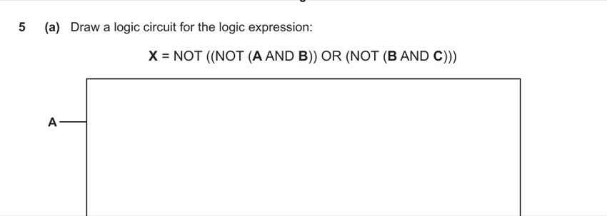
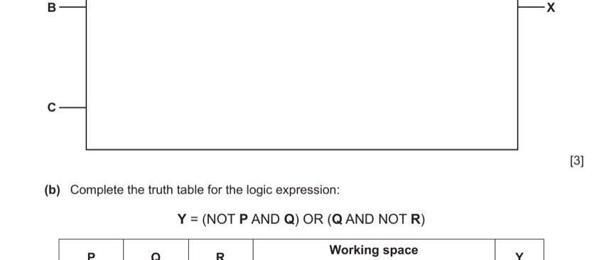
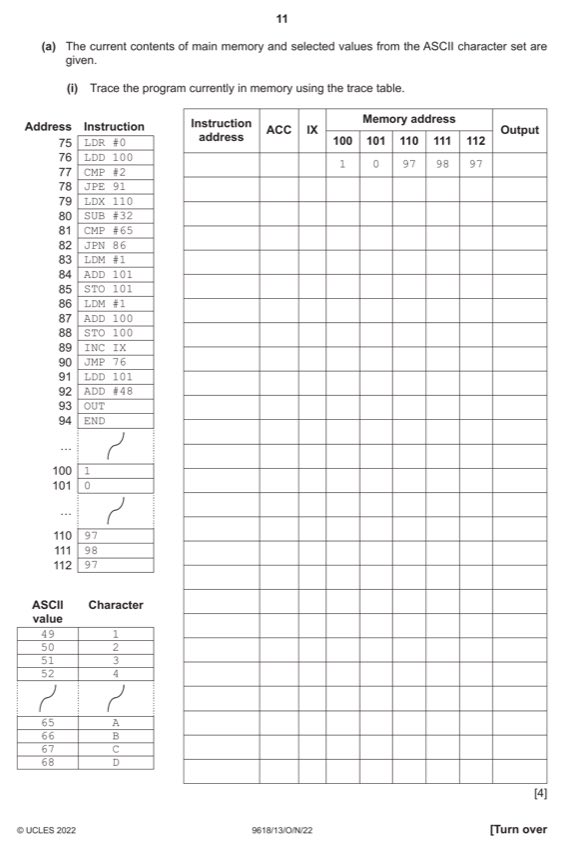

Question 1 — Digital Audio (7 marks)
1 (a) [2 marks]
Tick one box per row to show the effect of each action on the accuracy of the recording.
| Action | Accuracy increases | Accuracy decreases | No change |
|---|---|---|---|
| Change sampling rate from 40 kHz to 60 kHz | |||
| Change duration from 20 minutes to 40 minutes | |||
| Change sampling resolution from 24 bits to 16 bits |
Change sampling rate 40 → 60 kHz: More samples per second means more detail of the waveform is captured. Accuracy increases.
Change duration 20 → 40 minutes: The recording is longer — more data is recorded, but the sampling rate and resolution (and hence the quality of each sample) are unchanged. Accuracy does not change. (The file size doubles, but accuracy per unit time is the same.)
Change sampling resolution 24 → 16 bits: Fewer bits per sample means fewer possible amplitude levels, increasing quantisation errors and reducing the fidelity of each measurement. Accuracy decreases.
| Action | Accuracy increases | Accuracy decreases | No change |
|---|---|---|---|
| Sampling rate 40→60 kHz | ✓ | ||
| Duration 20→40 min | ✓ | ||
| Resolution 24→16 bits | ✓ |
- 1 mark for any one or two correct ticks, 2 marks for all three correct. [2]
1 (b) [2 marks]
Calculate the file size of a recording made at 50 kHz, 16-bit resolution, 20 minutes long. Give your answer in megabytes.
Working:
File size = sampling rate × duration × bits per sample
Duration in seconds = 20 × 60 = 1200 seconds
Size in bits = 50,000 × 1200 × 16 = 960,000,000 bits
Convert to bytes: 960,000,000 ÷ 8 = 120,000,000 bytes
Convert to megabytes: 120,000,000 ÷ 1,000,000 = 120 megabytes
- Working: 50,000 × 1200 × 16 ÷ 8. [1]
- Answer: 120 megabytes. [1]
1 (c) [3 marks]
Explain the purpose of a buffer in a computer system, using one other example.
Purpose of a buffer: A buffer is a temporary storage area in memory that holds data between two processes operating at different speeds. It decouples the producer of data from the consumer, so neither has to wait idly for the other.
For playing back an audio message: the audio data is downloaded or read from storage into a buffer. The playback system reads from the buffer smoothly, even if the data source (network/disk) delivers data in bursts. This prevents interruptions in playback when the network slows momentarily.
Example: A printer buffer — when a computer sends a document to a printer, the data is placed in a buffer. The computer finishes sending quickly and can continue working, while the printer reads from the buffer at its own (slower) speed. The buffer allows the two devices to operate at different speeds without one waiting for the other.
- Temporary storage to allow processes/devices to operate at different speeds. [1]
- Before the data is used by the receiving device / stores downloaded data. [1]
- Correct example (printer buffer / video streaming buffer / keyboard buffer). [1]
Question 2 — Database ASTRONOMY (14 marks)
Tables: COMPANY(TelephoneNumber, CompanyID, CompanyName) · PHOTOGRAPH(PhotoID, TelescopeID, DateTaken, TimeTaken, Elevation) · TELESCOPE(TelescopeID, CompanyID, SerialNumber)
2 (a) [3 marks]
Complete the table for the ASTRONOMY database.
| Item | Answer |
|---|---|
| A suitable field for the primary key in COMPANY | |
| A candidate key in TELESCOPE | |
| The degree of relationship between TELESCOPE and PHOTOGRAPH |
Primary key for COMPANY: CompanyID. TelephoneNumber could also theoretically be unique, but CompanyID is the designed primary key — a unique identifier for each company.
Candidate key in TELESCOPE: TelescopeID (the primary key) or SerialNumber (also potentially unique for each telescope). Both are minimal attributes that could uniquely identify each tuple.
Relationship between TELESCOPE and PHOTOGRAPH: One-to-Many (1:M). One telescope can take many photographs, but each photograph is taken by one telescope (TelescopeID in PHOTOGRAPH is a foreign key referencing TELESCOPE).
- CompanyID [1]
- SerialNumber or TelescopeID [1]
- 1:M (one-to-many) [1]
2 (b) [1 mark]
Identify the DBMS feature that describes the relationship between data and its structure.
The feature that describes the relationship between data and its structure — i.e., the overall blueprint of how the database is organised — is the logical schema. It models the entities, their attributes, and the relationships between them (often shown as an E-R diagram).
- Logical schema [1]
2 (c) [4 marks]
Complete the SQL script to return the total number of telescopes owned by the company whose ID begins with 'HW'.
SELECT _______ (_______) FROM TELESCOPE WHERE _______ LIKE _______;
SELECT COUNT (TelescopeID) FROM TELESCOPE WHERE CompanyID LIKE 'HW%';
- COUNT [1]
- TelescopeID [1]
- CompanyID [1]
- 'HW%' [1]
2 (d) [2 marks]
Write the SQL script to add one field to PHOTOGRAPH to store the resolution (e.g. 1920 × 1068).
The resolution "1920 × 1068" is a text string (contains digits, '×', space). Use TEXT or VARCHAR as the data type.
ALTER TABLE PHOTOGRAPH ADD Resolution TEXT;
- ALTER TABLE PHOTOGRAPH [1]
- ADD [appropriate field name] TEXT / VARCHAR(11) [1]
2 (e) [2 marks]
Complete the statements about bitmap images.
The _______ of a bitmap image is the number of bits used to store each pixel.
Metadata about the image is stored in the _______ of the file.
The bit depth (also called colour depth) of a bitmap image is the number of bits used to store each pixel. More bits per pixel = more possible colours.
Metadata (such as file format, dimensions, colour depth, and file size) is stored in the header of the file — a section at the start of the file that describes the file's properties.
- Bit depth [1]
- Header [1]
2 (f) [2 marks]
Describe the purpose of a query processor in a DBMS.
The query processor is the DBMS component that handles requests (queries) for data from the user or application. It:
1. Accepts criteria entered by the user (e.g. an SQL SELECT statement specifying conditions).
2. Searches the database for records that match those criteria.
3. Organises and returns the results to the user in the requested format (e.g. a table, report, or list).
- Allows the user to enter criteria / searches for data meeting criteria. [1]
- Organises and displays results to the user. [1]
Question 3 — OS Management Tasks Matching (4 marks)
3 [4 marks]
Draw one line from each OS management task to its most appropriate description.
| OS Management task | Description |
|---|---|
| Hardware management | Dynamically allocates memory to processes |
| Security management | Marks unallocated file storage for availability |
| Memory management | Installs programs for devices connected to external ports |
| Process management | Validates user and process authenticity |
| Allows processes to transfer data to and from each other |
Match each task to its best description:
• Hardware management → Installs programs for devices connected to external ports. (Installing/using device drivers for printers, keyboards, USB devices etc.)
• Security management → Validates user and process authenticity. (Manages logins, passwords, access control.)
• Memory management → Dynamically allocates memory to processes. (Assigns and reclaims RAM as processes start and stop.)
• Process management → Allows processes to transfer data to and from each other. (Inter-process communication; scheduling; deciding which process runs next.)
(The remaining description "marks unallocated file storage for availability" relates to file management — not directly one of the four listed tasks, so it remains unmatched in this version of the question.)
- Hardware management ↔ Installs programs for devices at external ports. [1]
- Security management ↔ Validates user and process authenticity. [1]
- Memory management ↔ Dynamically allocates memory to processes. [1]
- Process management ↔ Allows processes to transfer data to/from each other. [1]
Question 4 — CPU Components (7 marks)
4 (a)(i) [2 marks]
State the roles of the Memory Address Register (MAR) and the Memory Data Register (MDR).
MAR (Memory Address Register): Holds the address in main memory from which data is to be read (fetched) or to which data is to be written. The address bus carries the MAR's contents to the memory system to locate the correct memory location.
MDR (Memory Data Register): Holds the data that has just been read from the address in the MAR (during a fetch), or the data that is about to be written to that address (during a store). It is the buffer between the CPU and main memory.
- MAR: holds address in memory from which data is read / to which data is written. [1]
- MDR: holds the data read from / to be written to the address in the MAR. [1]
4 (a)(ii) [1 mark]
State when interrupts are detected during the Fetch-Execute (F-E) cycle.
Interrupts are detected after the execute stage is completed — i.e., at the end of each F-E cycle, before the next fetch begins. (Some sources describe this as "at the start of the next F-E cycle".)
- After completion of the execute stage / before the cycle begins (end of F-E cycle). [1]
4 (b) [2 marks]
Describe the purpose of the system clock.
The system clock generates a regular stream of timing signals (pulses) at a fixed frequency (the clock speed, measured in GHz). Every component in the CPU and on the motherboard synchronises its operations to these pulses — ensuring that data transfers happen at precisely the right time, in the correct sequence, and without one component getting ahead of another. The clock thus coordinates all CPU operations and processes them in the correct order.
- Synchronises operations / creates timing signals. [1]
- To process operations in the correct order / sequence / keeps track of time. [1]
4 (c) [2 marks]
Identify one hardware upgrade (other than SSD) that can improve performance, and explain why.
Upgrade: Increase the amount of RAM
Explanation: With more RAM, more application programs and data can reside in memory simultaneously. This reduces the need to swap data in and out of slower secondary storage (virtual memory/paging), saving time and improving multitasking speed and responsiveness.
(Other valid: increase clock speed → more FE cycles/second; increase cache → fewer RAM accesses; add more processor cores → more instructions in parallel.)
- Upgrade: increase RAM / clock speed / cache / cores. [1]
- Explanation: correct corresponding reason. [1]
Question 5 — Logic Gates (5 marks)
5 (a) [3 marks]
Draw a logic circuit for: X = NOT ((NOT (A AND B)) OR (NOT (B AND C)))

Decompose the expression layer by layer:
Layer 1: A AND B → AND gate. B AND C → AND gate.
Layer 2: NOT (A AND B) → NOT gate on first AND output. NOT (B AND C) → NOT gate on second AND output.
Layer 3: (NOT (A AND B)) OR (NOT (B AND C)) → OR gate.
Layer 4: NOT of OR output → final NOT gate → X.
This is equivalent to (A AND B) AND (B AND C) = A AND B AND C by De Morgan's theorem.
- NOT (A AND B) sub-circuit correct. [1]
- NOT (B AND C) sub-circuit correct. [1]
- NOT (OR gate) as final output, correct inputs. [1]
5 (b) [2 marks]
Complete the truth table for: Y = (NOT P AND Q) OR (Q AND NOT R)

Evaluate each row: NOT P AND Q (1 when P=0,Q=1); Q AND NOT R (1 when Q=1,R=0). Y=1 if either is true.
| P | Q | R | ¬P∧Q | Q∧¬R | Y |
|---|---|---|---|---|---|
| 0 | 0 | 0 | 0 | 0 | 0 |
| 0 | 0 | 1 | 0 | 0 | 0 |
| 0 | 1 | 0 | 1 | 1 | 1 |
| 0 | 1 | 1 | 1 | 0 | 1 |
| 1 | 0 | 0 | 0 | 0 | 0 |
| 1 | 0 | 1 | 0 | 0 | 0 |
| 1 | 1 | 0 | 0 | 1 | 1 |
| 1 | 1 | 1 | 0 | 0 | 0 |
- Rows 1–4 correct (0,0,1,1). [1]
- Rows 5–8 correct (0,0,1,0). [1]
Question 6 — Assembly Language (11 marks)
6 (a)(i) [4 marks]
Trace the program in memory. Initial memory: mem[100]=1, mem[101]=0, mem[110]=97, mem[111]=98, mem[112]=97. ASCII: 49='1', 65='A', 66='B', 67='C'.

The program iterates through memory starting at address 110 (via IX). It loads each value, subtracts 32 (converting from lowercase ASCII to uppercase range conceptually), then compares to 65. If ≥65 (i.e. if it's an uppercase or letter character), it increments mem[101] (a count). mem[100] counts the loop iterations (the current index). After 2 iterations (mem[100]=2), the loop ends and LDD 101 → ADD #48 → OUT outputs the count as a digit character.
Initial: mem[100]=1 (loop counter starts at 1), mem[101]=0 (letter count), mem[110]=97 (='a'), mem[111]=98 (='b'), mem[112]=97.
First iteration (IX=0): LDD 100: ACC=1. CMP #2: 1≠2, JPN fails, continue. LDX 110: ACC=mem[110+0]=97. SUB #32: ACC=65. CMP #65: 65=65, JPN 86 NOT taken. LDM #1: ACC=1. ADD 101: ACC=1+0=1. STO 101: mem[101]=1. LDM #1: ACC=1. ADD 100: ACC=1+1=2. STO 100: mem[100]=2. INC IX: IX=1. JMP 76.
Second iteration (IX=1): LDD 100: ACC=2. CMP #2: 2=2, JPE 91 taken → jump to 91. LDD 101: ACC=1. ADD #48: ACC=1+48=49. OUT: output ASCII 49 = '1'.
| Addr | ACC | IX | m[100] | m[101] | Output |
|---|---|---|---|---|---|
| 75 | 0 | 1 | 0 | ||
| 76 | 1 | ||||
| 79 | 97 | ||||
| 80 | 65 | ||||
| 83 | 1 | ||||
| 84 | 1 | ||||
| 85 | 1 | ||||
| 87 | 2 | ||||
| 88 | 2 | ||||
| 89 | 1 | ||||
| 76 | 2 | ||||
| 91 | 1 | ||||
| 92 | 49 | ||||
| 93 | 1 |
- [4 marks, 1 per highlighted block of the trace]
6 (a)(ii) [2 marks]
Explain the purpose of relative addressing in an assembly language program.
Relative addressing specifies a target address as an offset (displacement) from the current instruction's address (or the program counter), rather than an absolute fixed memory location.
Why it is used: It allows programs to be relocatable — the code can be loaded and executed at any location in memory, not just at a specific fixed address. Since all branch/jump targets are expressed as relative offsets, moving the entire program to a different memory region does not require any address values within the code to be changed. The operating system can load the program wherever convenient.
- Allows relocatable code. [1]
- All addresses specified as base address + offset, so program can run from any memory location. [1]
6 (b)(i) [1 mark]
Show the result after AND B01001100 on ACC = 0011 0110.
0011 0110 0100 1100 AND: 0000 0100
Result: 0000 0100
- 0000 0100 [1]
6 (b)(ii) [1 mark]
Show the result after OR B01001111 on ACC = 1001 0101.
1001 0101 0100 1111 OR: 1101 1111
Result: 1101 1111
- 1101 1111 [1]
6 (b)(iii) [1 mark]
Show the result after LSR #2 on ACC = 1001 1101.
Before: 1001 1101 LSR #2: shift right 2; 0s introduced left; 01 dropped from right After: 0010 0111
Result: 0010 0111
- 0010 0111 [1]
6 (c) [1 mark]
Give the name of one other instruction group (other than data movement).
Valid instruction groups: Arithmetic operations (ADD, SUB, MUL, DIV) / Input and output of data / Unconditional and conditional jump/branch instructions / Compare instructions.
- Any valid name: arithmetic / input-output / jump / compare. [1]
Question 7 — Networking & Cloud Computing (8 marks)
7 (a) [3 marks]
Complete the table about the cloud diagram (Laptop → Firewall → Device A → Internet Service Provider → Cloud X with Application B).
| Question | Answer |
|---|---|
| Name of device A (connects laptop to internet) | |
| A type of cloud, X | |
| An example of application B (runs on cloud) |
Device A: A router. The router connects the local network (where the laptop is) to the wider internet via the ISP. It routes packets between the private LAN and the public internet.
Type of cloud X: Public cloud. The diagram shows access via the public internet to a cloud service that is accessible to any user — this describes a public cloud. (A private cloud would only be accessible within an organisation's own network.)
Application B: Any cloud-based application — e.g. email (e.g. webmail), word processor, spreadsheet, database, cloud storage, video streaming, etc.
- Device A: Router [1]
- Type of cloud X: Public (cloud) [1]
- Application B: Any valid cloud application (email / word processor / etc.) [1]
7 (b) [3 marks]
Give one advantage and two disadvantages of transmitting data using satellites instead of copper cables.
Advantage: Satellites can provide connectivity to remote or rural areas that are not served by terrestrial cable infrastructure. They are not fixed to a single location — any area within a satellite's footprint can receive the signal.
Disadvantage 1: High latency — signals must travel large distances to the satellite (typically ~36,000 km for geostationary orbit) and back, introducing a significant delay (300–700ms round trip). This makes satellite links unsuitable for real-time applications like video calls or online gaming.
Disadvantage 2: Signal affected by bad weather — heavy rain, storms, or snow can attenuate satellite signals (rain fade), causing intermittent dropouts. Also, the transmission speed is typically slower than fibre broadband.
- Advantage: not fixed to a location / access in remote/rural areas. [1]
- Disadvantage 1: high latency / slow to connect. [1]
- Disadvantage 2: signal affected by weather / slower speed than fixed line. [1]
7 (c)(i) [2 marks]
Give two benefits of dividing a network into subnetworks by subnetting.
1. Improved security: Traffic between subnetworks must pass through a router, which can enforce access control policies. This limits the spread of attacks — a compromise in one subnet does not automatically give access to others.
2. Reduced congestion: Broadcast traffic is limited to the local subnet and not forwarded to all subnets. This reduces unnecessary traffic on each subnet, improving performance.
Also valid: allows network extension / aids management / improves performance.
- Improved security. [1]
- Reduced congestion / better performance / easier management / allows extension. [1]
Question 8 — Software Licensing & AI (6 marks)
8 (a)(i) [2 marks]
Explain why some programs are distributed under an open source licence.
An open source licence gives users the right to view, modify, and redistribute the source code. Developers choose this model for several reasons:
1. Community contribution: By making the source code available, users from around the world can report bugs, suggest improvements, and contribute fixes. The developer benefits from a large community of testers and contributors who can identify and resolve errors they might never find alone.
2. Transparency and trust: Open source code can be audited by anyone, promoting transparency and building user trust — especially important for security tools.
- Allows users to customise / report / fix errors / add features. [1]
- Allows collaboration / improves the code through community input. [1]
8 (a)(ii) [2 marks]
Explain how a programmer benefits from distributing a program under a commercial licence.
A commercial (proprietary) licence keeps the source code private and gives the programmer exclusive rights over the software:
1. Revenue: The programmer can charge a fee for the software (purchase price, subscription, or per-user licence fee), generating income from the work they have created.
2. Intellectual property protection: The licence prevents others from copying, redistributing, or modifying the software without permission. This protects the programmer's investment and prevents competitors from freely using or improving the program.
- Can charge a fee / enables copyright. [1]
- Prevents illegal copying / modification / protects source code. [1]
8 (b) [2 marks]
Describe one economic impact the AI fault diagnosis module may have on the vehicle repair garage.
Economic impact: Reduced costs and increased productivity
The AI module can diagnose faults quickly and accurately, reducing the time technicians spend on diagnosis. This means technicians can spend more of their time on the actual repair work. As a result, the garage can complete more repair jobs per day, increasing revenue without hiring additional staff. Alternatively, the garage might need fewer skilled diagnostic technicians, reducing labour costs. These efficiency gains may allow the garage to pass savings on to customers through lower prices, potentially attracting more business.
- Economic impact identified (e.g. reduce costs / increase profits). [1]
- Corresponding explanation (e.g. less time on diagnosis → more repairs per day). [1]
Question 9 — Number Representations (4 marks)
9 (a)(i) [1 mark]
Convert the unsigned binary value 1001 0011 into hexadecimal.
Split into nibbles: 1001 = 9; 0011 = 3. Answer: 93
- 93 [1]
9 (a)(ii) [1 mark]
Convert the unsigned binary value 1001 0011 into denary.
128 + 16 + 2 + 1 = 147
- 147 [1]
9 (b) [2 marks]
State two benefits of using Binary Coded Decimal (BCD) to represent values.
1. Straightforward conversion between BCD and denary: BCD directly encodes each decimal digit, so conversion to/from decimal is simple — no division or remainder operations needed. This simplifies programming and reduces complexity in applications that handle decimal numbers.
2. Exact representation of decimal fractions: BCD can represent monetary values exactly (e.g. £12.99 with no rounding errors). Standard binary floating point cannot exactly represent many decimal fractions (e.g. 0.1 in binary is a repeating fraction), causing rounding errors in financial calculations.
- Straightforward to convert to/from denary / simpler to encode and decode. [1]
- Can represent monetary values exactly / digital display is easier. [1]
Question 10 — Control Systems & Embedded Systems (8 marks)
10 (a) [3 marks]
Explain the importance of feedback in a control system.
Feedback is the mechanism by which a control system monitors its own output and uses this information to adjust future actions.
In a control system, sensors continuously measure the state of the controlled environment (e.g. temperature, pressure, speed). This measured output is fed back to the controller, which compares it against a desired set point. If there is a difference (an error), the controller sends corrective signals to actuators to reduce the error.
Without feedback, the system operates open-loop — it cannot detect or correct deviations from the desired state caused by external disturbances or changes in the environment. Feedback enables the system to automatically maintain the correct output, even when conditions change unpredictably, ensuring the system operates within given criteria.
- To ensure the system operates within given criteria. [1]
- By enabling system output to affect subsequent system input. [1]
- Allowing conditions to be automatically adjusted. [1]
10 (b)(i) [2 marks]
Identify one sensor that could be used in a car alarm system and justify your choice.
Sensor: Infra-red (motion) sensor
Justification: An infra-red sensor detects the heat emitted by a person's body. If an intruder enters the car (or approaches it closely), the sensor detects their body heat and triggers the alarm. This is effective because it activates only when a warm body (human or animal) is detected, reducing false alarms from vibrations alone.
(Also valid: sound sensor — if a sound occurs inside the car the alarm activates; pressure sensor — an intruder sitting in the seat triggers the alarm.)
- Sensor identified (infra-red / sound / pressure). [1]
- Justification explaining how it detects an intrusion. [1]
10 (b)(ii) [3 marks]
Describe the characteristics of an embedded system.
An embedded system has the following characteristics:
1. It is built into (integrated within) a larger device — the computing components are physically incorporated into the product rather than being a separate, standalone unit.
2. It combines hardware and software designed for a specific function — unlike a general-purpose computer, it performs a dedicated task (e.g. controlling a car alarm, regulating a washing machine cycle, managing a pacemaker).
3. It must have a processor, memory, and input/output to function — even basic embedded systems have a microprocessor or microcontroller, ROM for firmware, RAM for working data, and I/O interfaces for sensors and actuators.
4. The system is not easily changed or reprogrammed by the end user — it is purpose-built and typically runs the same program throughout its lifetime.
- Built into / integrated into the device (car alarm). [1]
- Hardware and software designed for a specific function. [1]
- Must have processor, memory, I/O / not easily changed by the end user. [1]